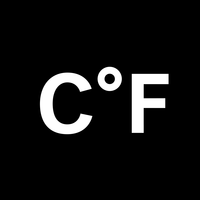

What I do
I'm a digital tailor. The internet is a closet full of suits. Places like Wix, Wordpress, or Shopify offer a vast variety of out-of-the-box ones. But are they so different?

Travis Gertz puts this quite well:
Without the logos, could you tell which companies own which screenshots? Does it matter? The pattern’s become its own trademark. Just one of the popular yet mediocre ones plaguing modern screen-based design.
Instead of having yours made on the assumptions of the masses, with endless possible combinations of features you don't need, at the cost of performance and accessibility - if you don't want to be a one-size-fits-all, but a perfect fit.
That's when you need me.
Experience
Education
-
University of Applied Sciences
Communication & Multimedia Design (2014 - 2018)
Career
-
De Voorhoede
Internship (2016)
Front-end Developer (2016)
-

CLEVER°FRANKE
Internship (currently)
References
Merlijn is een prettige stagiair. Door zijn zelfstandigheid pakt hij items van de backlog op zonder al te veel sturing. Dankzij zijn leergierigheid maakt hij zich nieuwe concepten snel eigen. De autodidactische instelling zorgt er voor dat Merlijn de problemen die hij tegen komt, zelf uitzoekt en oplost. Tijdens code reviews kan Merlijn de feedback die hij ontvangt verwerken en begrijpen waarom deze gegeven is. Wanneer Merlijn zelf een code review uitvoert stelt hij kritische vragen over de gekozen aanpak.
Awards
Golden Dot Award
Communication and Multimedia Design in Amsterdam awards its very best student work at the Golden Dot Awards (GDA).
SpinAward
The SpinAwards award the prize for digital innovation in the Netherlands. The best creative agencies, clients, app makers and content creators submit their work.